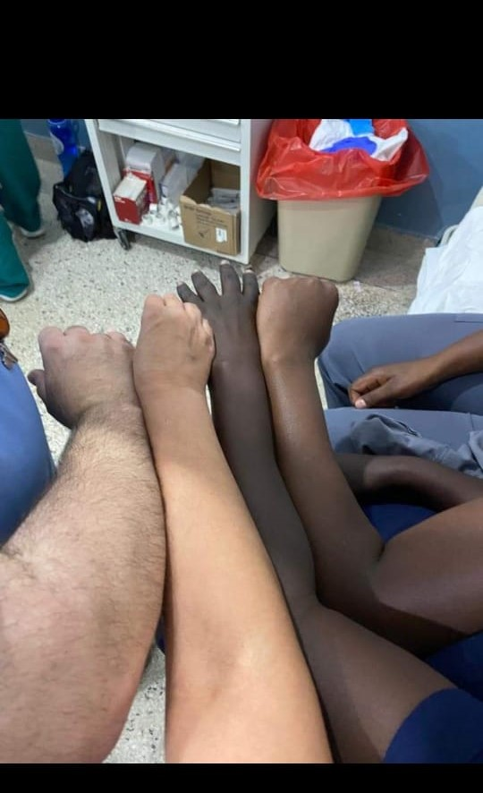
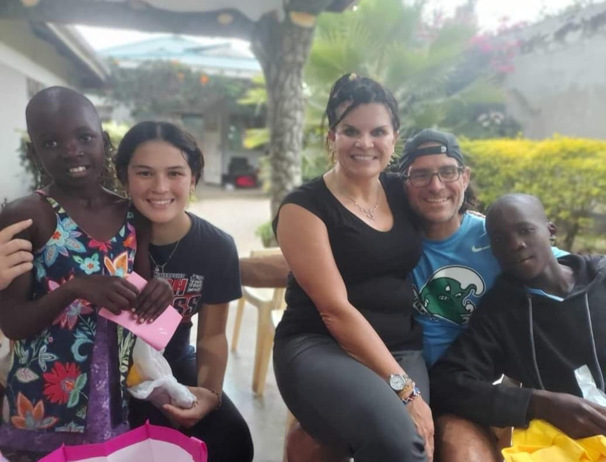

Giving hope and smile to orphaned, destitute and vulnerable children
Hopes childrens home is a safe haven for orphaned, abandoned and vulnerable children in the informal settlements of Muhuru Bay
P.O BOX 195-40400
Suna, migori, Kenya. donate now hopechildrenshome0@gmail.com
Our feeding program targets needy children in Muhuru Bay and it's environs
Malnutrition affects many children in informal settlements; our seasoned feeding program which is supported by well wishers involves children in Muhuru Bay
MEDICAL AND HEALTH CARE

Hopes children's home has shipped thousands of medical equipments, wheel chairs,crutches and other life saving and diagnostic devices to our partner organisations
education history and success
Hope children's home has awarded fully paid schoolership to 12 children in various universities in United States of America ,

Our founder Zachary Smith is a man filled with vigor to help as many kids as possible…
The most comforting bit of hopes childrens home is that it’s captain is a man filled with vigor to help as many kids as possible 90250,Holly Park, los Angeles County Carlifonia, United States. and can be reached vai this Number. +15853674009
Manager
The kenyan manager Mr Washington odhiambo Maintains orphanage staff by recruiting, selecting, orienting, and training employees 0714725909